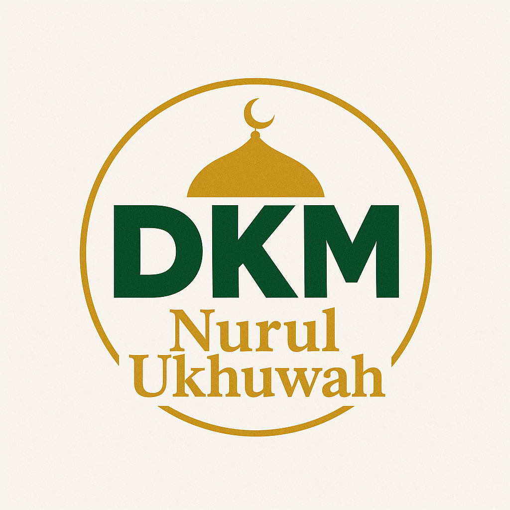
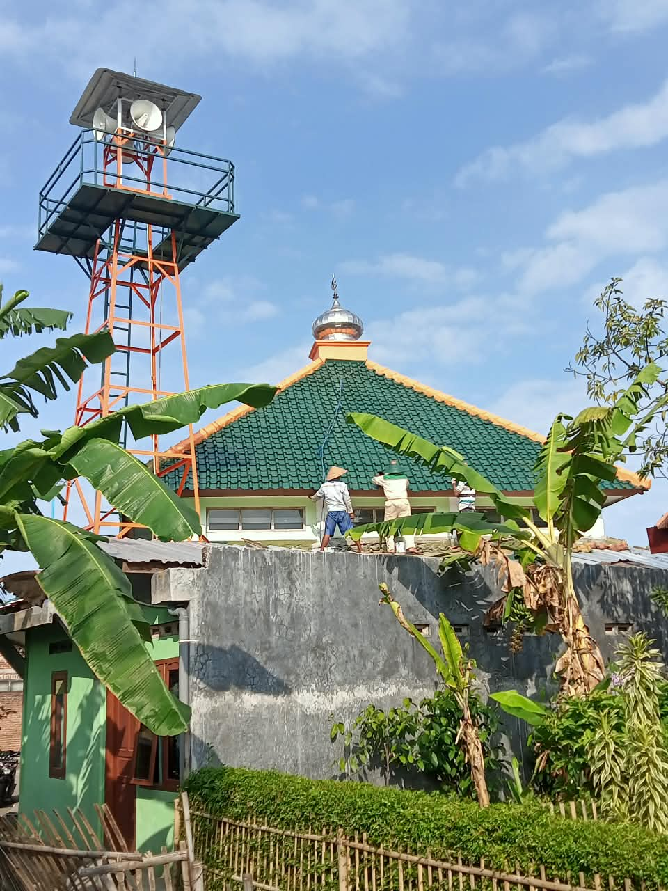
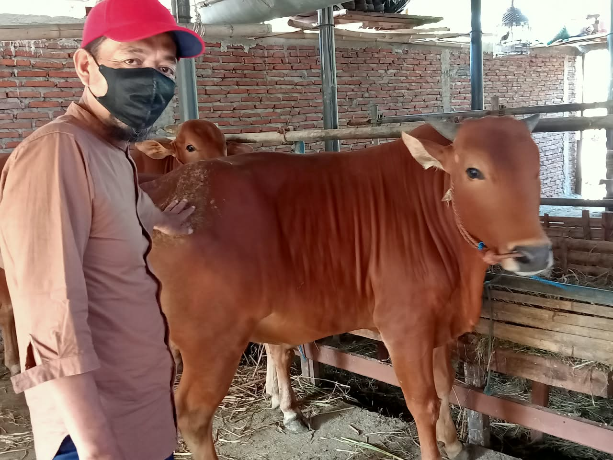

Dewan Kemakmuran Masjid — Donan, Cilacap Tengah, Jawa Tengah
Tempat Ibadah, Ilmu, dan Ukhuwah Islamiyah
Semoga masjid ini senantiasa menjadi rumah Allah yang diberkahi, tempat tegaknya sholat berjamaah, penyebaran ilmu yang bermanfaat, serta pusat kebaikan dan kerukunan antarwarga. 🤲
* Waktu setempat — dapat berubah setiap hari
Masjid Nurul Ukhuwah berdiri di lingkungan RT 01 RW XI, Kelurahan Donan, Kecamatan Cilacap Tengah, Kabupaten Cilacap, Jawa Tengah — Kode Pos 53222. Tanah tempat masjid berdiri telah diwakafkan secara sah dan tercatat resmi dalam Sertifikat Tanah Wakaf seluas 469 meter persegi.
Masjid ini dibangun oleh Ikatan Dai Indonesia (IKADI) pada tahun 2008, dengan dukungan bantuan dana dari Pemerintah Persatuan Emirat Arab melalui organisasi Bulan Sabit Merah Emirat Arab. Oleh masyarakat sekitar, masjid ini juga dikenal dengan sebutan Masjid IKADI.
Pada tanggal 10 Maret 2021, dilakukan reorganisasi pengelolaan sekaligus penetapan nama baru menjadi Masjid Nurul Ukhuwah, disaksikan oleh seluruh jamaah dan pengurus IKADI. Secara musyawarah dan mufakat, IKADI menyerahkan pengelolaan kepada Dewan Kemakmuran Masjid (DKM):
Masjid Nurul Ukhuwah berpegang teguh pada Al-Qur'an dan As-Sunnah sesuai pemahaman Ahlussunnah wal Jama'ah. Masjid ini tidak berafiliasi secara khusus kepada organisasi tertentu seperti NU maupun Muhammadiyah, melainkan terbuka untuk seluruh umat Islam.
🔧 Perawatan & Perbaikan Masjid:

Perbaikan atap bocor & pemeliharaan fasilitas masjid
🎬 Klik di sini → Video Perbaikan Pengeras Suara Adzan
🔧 Klik di sini → Persiapan & Perbaikan Tempat Penyembelihan Hewan Qurban

Survei & persiapan hewan qurban
🎬 Klik → Video Pembagian Daging Qurban
🎬 Klik → Video Persiapan Tempat Penyembelihan
📍 Alamat Lengkap:
Jl. Kutilang Barat, RT 01 RW XI, Kelurahan Donan, Kecamatan Cilacap Tengah, Kabupaten Cilacap, Jawa Tengah — Kode Pos 53222
📞 Pengurus DKM:
• Bpk. Sulistiyono — Ketua +62 813-2753-0681
• Bpk. Aditia Nugroho — Sekretaris +62 813-1150-9584
• Bpk. Supriyatno — Bendahara +62 838-7260-5334
💰 Infak Kaleng Bulanan:
Hasil pengumpulan infak kaleng dari jamaah dan warga sekitar — dihitung setiap bulan untuk keperluan masjid dan sosial.
💳 Rekening Donasi Masjid:
Bank Syariah Indonesia (BSI) | No. Rekening: 7205811871
a.n. Dewan Kemakmuran Masjid Nurul Ukhuwah